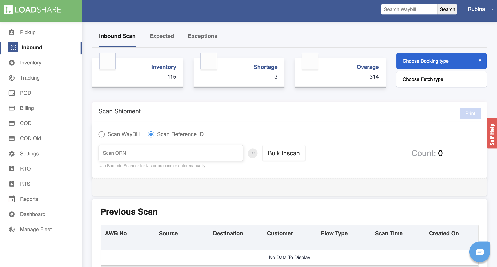
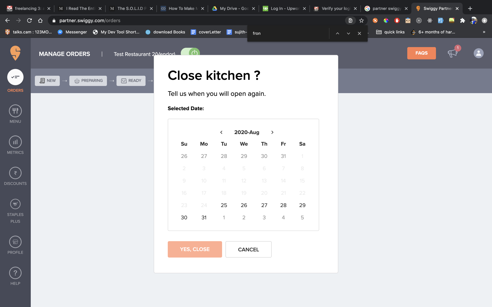
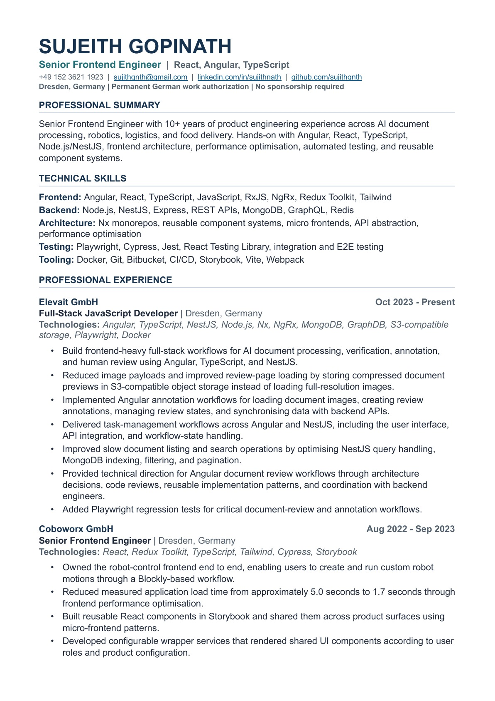
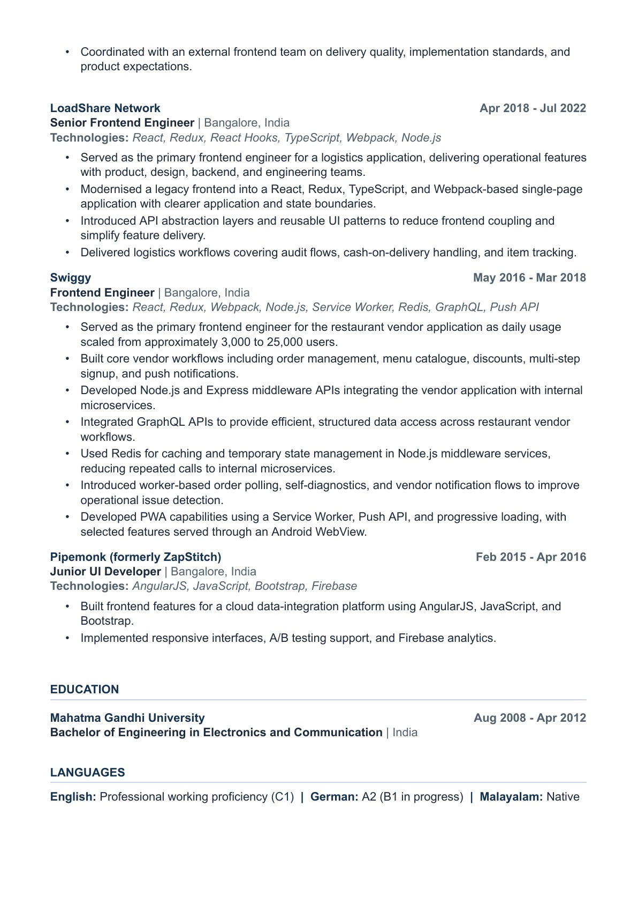
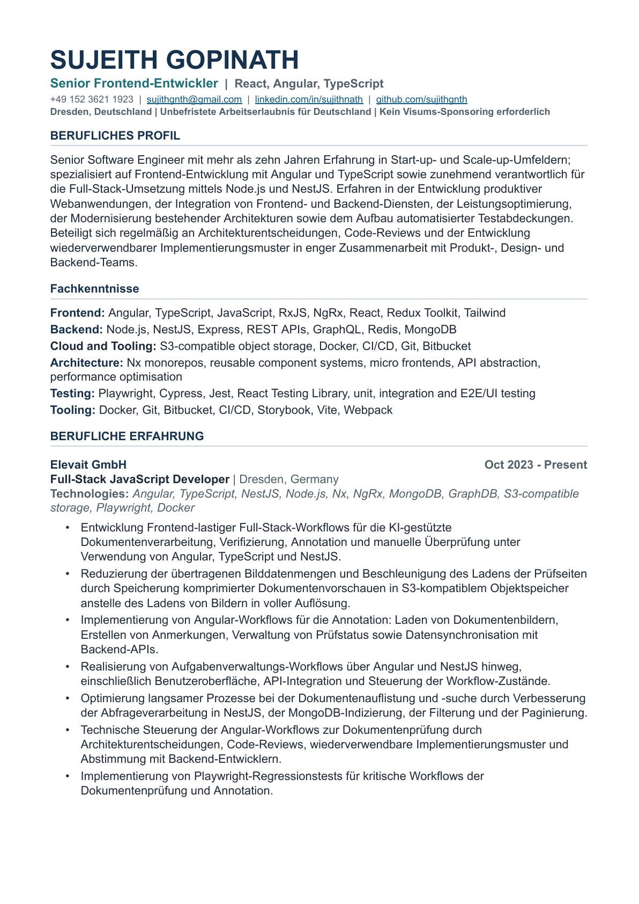
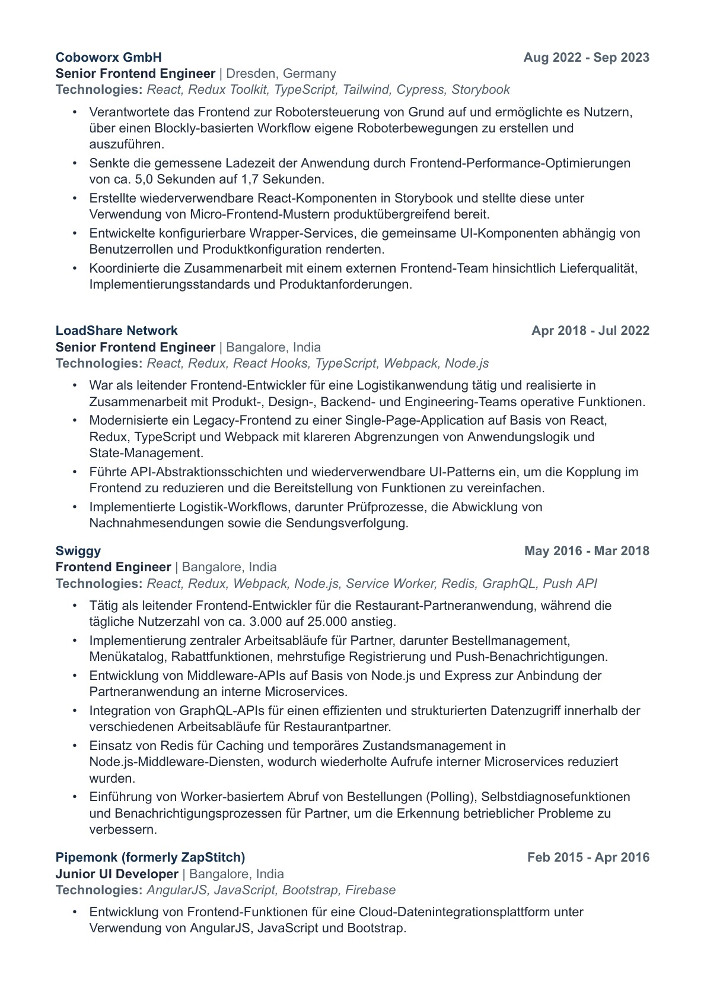

Senior Frontend Engineer · Dresden, Germany
I turn complex workflows into fast, dependable products.
For more than a decade, I’ve built and scaled production web applications across AI, robotics, logistics and food delivery—with React, Angular, TypeScript and a strong bias toward clear product thinking.
Available immediately
Permanent German work authorisation
Selected work
Products built for real operational complexity.
A selection of problems I have owned—from AI-assisted review systems to interfaces controlling physical robots.
AI document operations
Making human review feel clear, fast and trustworthy.
I build frontend-heavy workflows for document verification, annotation and human review—connecting complex state, backend APIs and large visual assets into one coherent product experience.
- Owned Angular workflows across UI, API integration and state management
- Improved review loading by serving compressed document previews
- Shaped architecture through reviews and reusable implementation patterns
- Protected critical journeys with Playwright regression coverage
01
02
AI SUGGESTION
✓
Field verifiedConfidence 98%
02
Needs reviewCheck source region
RejectApprove
Robotics workflow design
Turning robot motion into a visual product people can operate.
I owned the frontend of a robot-control application, translating hardware workflows into an approachable Blockly-based experience while strengthening the component architecture underneath it.
5.0sbefore
1.7safter
Measured application load time
≪
Start sequence
Move to position
Rotate joint · 45°
Run motion
Earlier product work
Interfaces used to run businesses at scale.

Modernising logistics operations
Led frontend delivery for audit, cash-on-delivery and item-tracking workflows. Modernised a legacy product into a structured React and TypeScript single-page application.

Scaling restaurant operations
Built core order, menu and notification workflows as the vendor application grew from approximately 3,000 to 25,000 daily users.
Experience
A career built inside product teams.
I have spent my career in startups and scale-ups, working close to users, product decisions and the systems behind the interface.
Elevait
Full-Stack JavaScript Developer
AI document processing · Angular · TypeScript · NestJS
Coboworx
Senior Frontend Engineer
Robotics · React · TypeScript · Storybook
LoadShare Network
Senior Frontend Engineer
Logistics · React · TypeScript · Node.js
Swiggy
Frontend Engineer
Food delivery · React · GraphQL · PWA
Pipemonk
Junior UI Developer
Cloud integration · AngularJS · JavaScript
How I contribute
Senior ownership, grounded in the details.
I care about the quality users feel and the technical foundations teams depend on.
Product-minded delivery
I translate real user workflows into clear interfaces and carry features from early decisions through polished release.
Frontend architecture
I establish boundaries, reusable patterns and component systems that make the next feature easier to build.
Performance & quality
I measure bottlenecks, protect important paths with automated tests and treat real-world behaviour as part of the feature.
Cross-stack collaboration
I work comfortably across APIs, state, data and delivery tooling so the whole product—not only the UI—works well.
Core toolkit
React
Angular
TypeScript
JavaScript
Node.js
NestJS
GraphQL
NgRx / Redux
Storybook
Playwright
Cypress
Jest
Webpack / Vite
Docker
CI/CD
Résumé
The complete career story.
Read my résumé directly here. Choose English or German—no download required.




Let’s build something useful